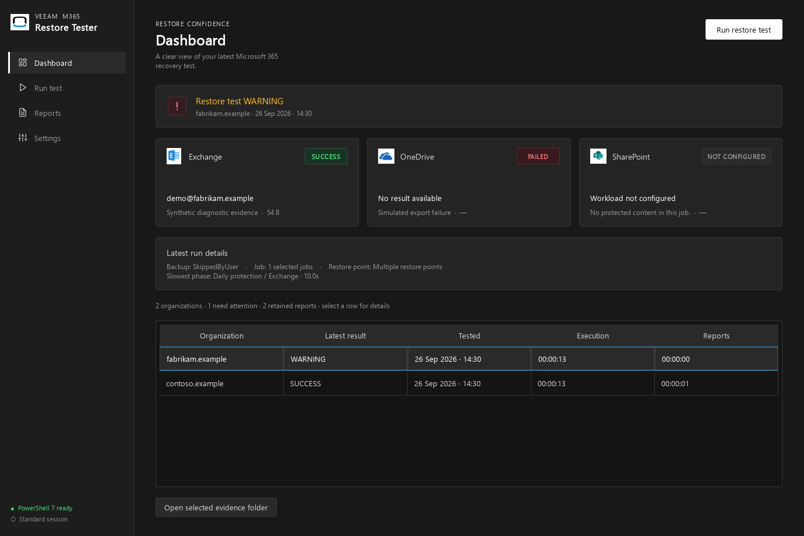
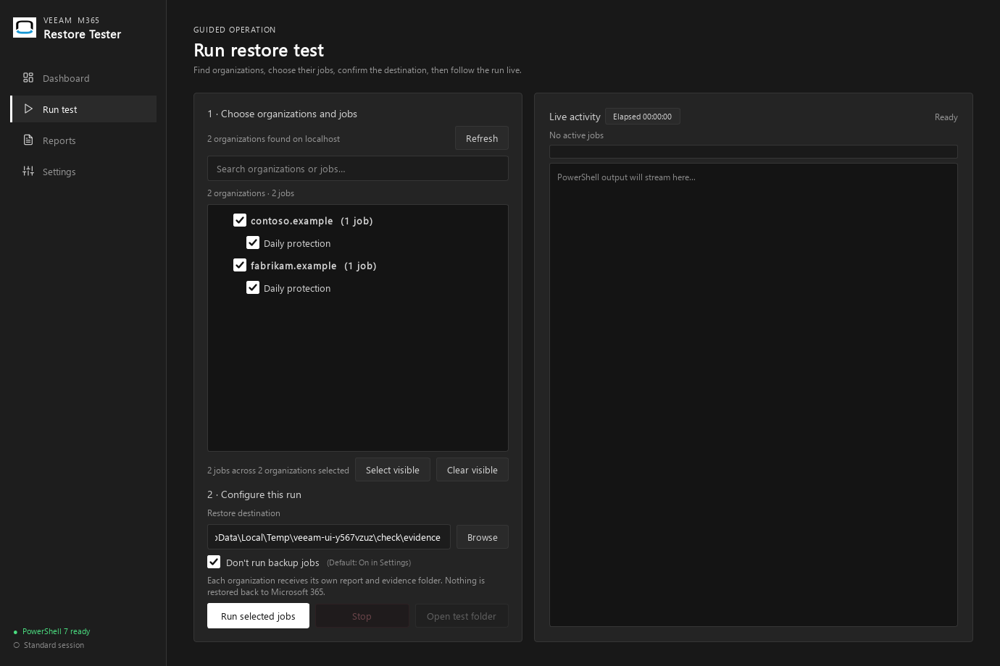
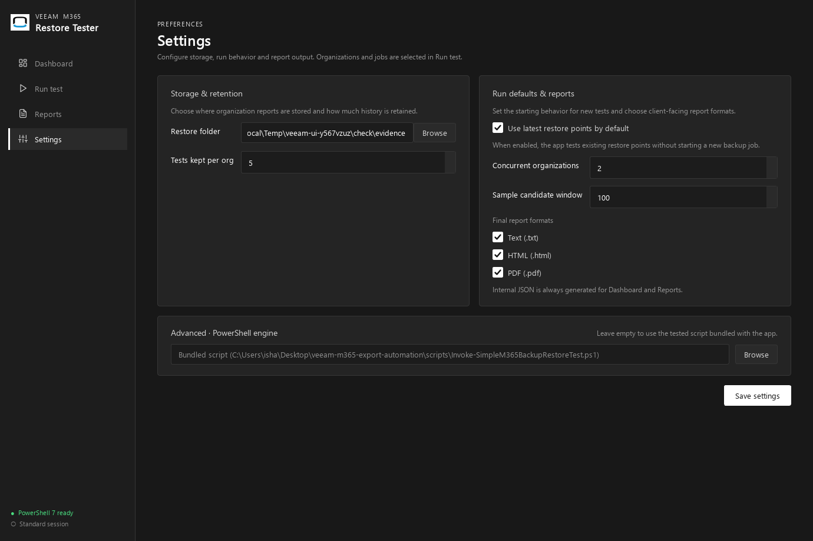
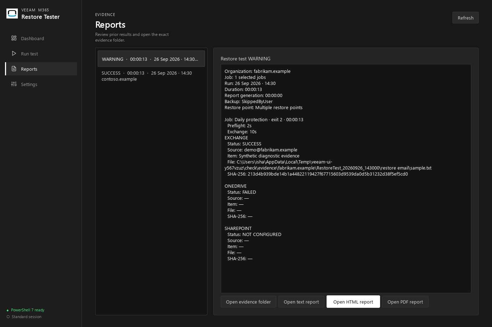

Dal job Veeam
all'evidenza locale verificata.
Manuale tecnico dell'applicazione, dei contratti e del ciclo di esecuzione. Il test apre restore point e salva campioni fuori posto sul filesystem locale. Nessun cmdlet di ripristino nel tenant viene eseguito.
Ambito: campioni Exchange, OneDrive e documenti SharePoint. Il successo non verifica ogni oggetto protetto né un ripristino integrale di Teams. Gli schemi descrivono l'implementazione corrente; il riferimento include tutte le funzioni con il relativo sorgente.
01 · Architettura e confini
| Modulo | Responsabilità |
|---|---|
| main.py / app.py | QApplication, quattro pagine, validazione, batch e finalizzazione. |
| queue.py / runner.py | Scheduling, QProcess, UTF-8 incrementale, eventi, stop e identità report. |
| discovery.py / paths.py / config.py | Inventario, risorse source/frozen, pwsh e impostazioni JSON. |
| batch_report.py / html_report.py / pdf_report.py | Aggregazione, copia, serializzazione, HTML e Chromium PDF. |
| reports.py / retention.py | Cronologia limitata e cancellazione sessioni vecchie. |
| ui/ | Albero organizzazioni/job, card, log, dialoghi e tema. |
| diagnostics.py | Autotest offline con impostazioni isolate e campioni sintetici. |
02 · Installazione e filesystem
Estrarre tutto il portable sul server Veeam: la connessione è a localhost. Servono Windows, PowerShell 7 nel PATH, modulo Veeam.Archiver.PowerShell, Explorer pertinenti, autorizzazioni Veeam e destinazione scrivibile. L'EXE richiede elevazione. Non esistono installer, servizio Windows o database applicativo.
portable/ # distribuzione nella repository VeeamM365RestoreTester-1.3.1-portable.zip SHA256SUMS.txt # hash ZIP release.json # versione, dimensioni, numero file VeeamM365RestoreTester/ # cartella estratta da trasferire VeeamM365RestoreTester.exe _internal/ # Python, Qt, Chromium, assets, scripts LICENSE.txt THIRD_PARTY_NOTICES.txt
Python è incluso; PowerShell e Veeam sono esterni. Non cancellare DLL, plugin Windows o risorse Chromium dal runtime. Gli import QML inutilizzati sono esclusi prima della raccolta dipendenze. Sorgenti di sviluppo, test, documentazione e schermate non entrano nel pacchetto.
resource_path() usa sys._MEIPASS nel frozen e la radice repository da sorgente. resolve_script() preferisce il percorso custom non vuoto. powershell_path() cerca pwsh.exe, poi pwsh. Le impostazioni rimangono in %APPDATA%\VeeamM365RestoreTester\settings.json: “portable” riguarda il runtime, non le preferenze utente.
03 · Interfaccia: ingressi, azioni, risultati
| Pagina | Ingresso | Comportamento / uscita |
|---|---|---|
| Dashboard | Report nel restore root; selezione riga e doppio clic. | Ultimo risultato per organizzazione, problemi prima dei successi; card, fase più lenta, tempi e pulsante cartella evidenze. |
| Run test | Inventario, filtro, checkbox, root, modalità backup, Start/Stop. | Filtro locale senza nuova discovery; selezioni nascoste conservate. Progress completed/total e fasi di tutti i worker. Controlli bloccati durante batch. |
| Reports | Cronologia per mtime JSON, selezione report. | Dettagli per job e fase, apertura cartella e formati presenti. Riutilizza la scansione Dashboard. |
| Settings | Default operativi e Save settings. | Richiede root, script esistente se custom, almeno un formato. Salva atomicamente; batch attivo mantiene il proprio snapshot. |




04 · Configurazione e modalità
ConfigManager fonde solo chiavi note con i default. File assente, JSON invalido ed errori I/O di lettura mantengono i default. Non valida tipi arbitrari modificati manualmente. Save scrive settings.tmp e poi sostituisce settings.json.
| Chiave / tipo | Default / limiti GUI | Effetto |
|---|---|---|
| selected_multi_org_jobs / object | {} | Nome organizzazione → lista nomi job; ripristina selezioni dopo discovery. |
| restore_root / string | C:\VeeamRestoreLocalTest | Radice staging, cartelle finali e cronologia. |
| script_path / string | Vuota | Motore incluso; altrimenti .ps1 esterno con contratto compatibile. |
| max_restore_tests / integer | 5 / 1–100 | Sessioni finali per organizzazione, non numero di file. |
| skip_backups / boolean | true | True aggiunge -SkipBackup; false avvia backup prima del test. |
| max_parallel_orgs / integer | 2 / 1–4 | Massimo worker; clamp anche nella coda. |
| sample_candidate_limit / integer | 100 / 0–100000 | Finestra per sorgente; zero = intera enumerazione. Passato solo al motore incluso. |
| report_formats / array | [txt, html, pdf] | Almeno uno in GUI; JSON sempre. API Python accetta lista vuota per solo JSON. |
{
"selected_multi_org_jobs": {"contoso.example": ["Daily protection"]},
"restore_root": "D:\\RestoreEvidence", "script_path": "",
"max_restore_tests": 5, "skip_backups": true,
"max_parallel_orgs": 2, "sample_candidate_limit": 100,
"report_formats": ["html", "pdf"]
}Modalità combinabili: sorgente/frozen; GUI/CLI/autotest; backup nuovo/esistente; campione limitato/completo; singola/multi-organizzazione; motore incluso/custom; formati selezionabili. Nessuna modalità abilita restore cloud.
05 · Scheduling, identità e cancellazione
RunPage.start controlla selezioni, root, pwsh, script e collisioni tra nomi organizzazione sanitizzati. Riserva Batch_TIMESTAMP con mkdir esclusivo; collisioni incrementano il timestamp di un secondo. Copia impostazioni e consegna JobTask(org_name, job_name) alla coda.
Input: [A/email, A/onedrive, B/all, C/all], concurrency = 2
slot 1 [ A/email ] [ A/onedrive ]
slot 2 [ B/all ] [ C/all ]
A non può occupare due slot contemporaneamente.
Output: risultati nell'ordine dell'input, non di completamento._pump sceglie il primo pendente la cui organizzazione casefold non è attiva. Ogni worker ha root Jobs/ORG/NNNN_JOB. Il report accettato deve avere Organization e JobName esatti e mtime successivo all'avvio con tolleranza di un secondo. Report estranei o vecchi diventano null nel risultato.
| Segnale | Payload | Effetto |
|---|---|---|
| Runner.output | line, level | Prefisso organizzazione/job e colore console. |
| Runner.phase_changed | Fase ricavata da regex sui log. | Indicatore UI, non contratto di successo. |
| Runner.finished / failed_to_start | exit code / error string | Libera slot, raccoglie JSON, scollega callback e riprende pump. |
| Queue.progress | completed, total, activity | Aggiorna conteggio e worker attivi. |
| Queue.finished | results, cancelled | Finalizzazione per organizzazione. |
Stop richiede conferma, cancella i pendenti, invia terminate agli attivi e kill dopo 2500 ms se necessario. La GUI resta responsiva. La chiusura finestra attende la finalizzazione. Un kill forzato può interrompere i finally PowerShell: staging conservato e sessioni Veeam da controllare. Fermare il processo client non garantisce l'annullamento di un backup già avviato sul server.
06 · Motore e CLI PowerShell
Get-VeeamM365Inventory.ps1 importa il modulo, connette localhost e legge organizzazioni/job ordinati per nome. Se il lookup job per organizzazione fallisce, filtra la lista globale per nome/ID organizzazione. Emette una riga marker __VEEAM_INVENTORY__ e JSON compatto; disconnette in finally. Il parser cerca l'ultimo marker, non interpreta i log come dati.
pwsh -NoLogo -NoProfile -NonInteractive -File .\scripts\Get-VeeamM365Inventory.ps1 pwsh -NoProfile -File .\scripts\Invoke-SimpleM365BackupRestoreTest.ps1 ` -OrganizationName 'contoso.example' -JobName 'Daily protection' ` -LocalRestoreRoot 'D:\RestoreEvidence\ManualTest' -SkipBackup ` -SampleCandidateLimit 100 -MaxSampleAttempts 25
| Parametro | Ingresso | Comportamento |
|---|---|---|
| OrganizationName / JobName | Stringhe; prompt se vuote nel CLI. | Lookup esatto all'interno organizzazione; zero o più match = errore. GUI passa sempre entrambi con -NonInteractive. |
| LocalRestoreRoot | Percorso, default C:\VeeamRestoreLocalTest. | Crea sottocartella timestamp. Se creazione radice fallisce tenta C:\Temp\VeeamRestoreLocalTest; GUI non accetta report fuori dal workspace assegnato. |
| SkipBackup | Switch, assente per default nel CLI. | Presente salta backup; assente usa Start-VBOJob sincrono e Get-VBOJobSession -Last. Success/Warning sono accettati. |
| MaxSampleAttempts | 1–1000, default 25. | Budget export cumulativo per workload, condiviso tra le sue sorgenti. Non esposto nella GUI. |
| SampleCandidateLimit | 0–100000, default 100. | 0 enumera tutto; altrimenti finestra effettiva max(valore, MaxSampleAttempts). |
Nessun fallback al restore point di un altro job. Exit 0 richiede almeno un workload riuscito, nessun workload fallito, backup accettato e nessun FatalError/CleanupErrors. Exit 1: parametri essenziali/helper mancanti. Exit 2: connessione/lookup falliti o test non interamente riuscito. Errori non gestiti possono terminare prima del JSON. Il CLI scrive il report del job sotto timestamp; aggregazione, HTML/PDF e retention sono funzioni Python della GUI.
07 · Campionamento e verifica
| Workload | Sorgenti e filtri | Export e metadati |
|---|---|---|
| Exchange | Database → mailbox. Esclude Discovery/RestoreTest e mailbox eliminate. ItemClass IPM.Note* o vuota. | Export-VEXItem -To. SourceMailbox, Subject e metadati file. |
| OneDrive | Utenti tranne RestoreTest. Documenti ricorsivi; esclude null, nomi vuoti, IsFolder/IsContainer e nomi senza estensione. | Save-VEODDocument -Path. SourceUser, FileName e metadati file. |
| SharePoint | Siti e librerie randomizzati; escluse SitePages, Site Assets, Style Library, Form Templates, User Photos. Documenti ricorsivi; esclusi contenitori e .aspx/.master/.htm/.html. | Save-VESPItem -Path. Site, Library, FileName e metadati file. Un job chiamato “Teams” non introduce test Teams separati. |
La finestra è applicata dopo il filtro su ogni sorgente. Sorgenti randomizzate; entro la finestra sono estratti al massimo i candidati necessari al budget rimasto. Il limite riduce il lavoro client ma un cmdlet che bufferizza internamente può comunque enumerare tutto sul server. Errori di enumerazione fanno proseguire su altre sorgenti; nessun candidato con errori di enumerazione causa FAILED.
candidati → randomizzazione → .sample-attempts-GUID/attempt-NNN
→ ExportAction(candidate, attemptDirectory)
→ ricerca ricorsiva file non vuoti
→ primo file valido ordinato per FullName
→ Move nello stesso volume; collisione risolta con suffisso
→ controllo size > 0 e SHA-256 → SUCCESS
↓ errore / nessun file
pulizia → prossimo candidato
L'helper restituisce {Success, Candidate, File, SHA256, Attempts, LastError}. File/Candidate sono null se esaurisce i tentativi. Il move richiede che source e target restino entro DestinationRoot; finally elimina i tentativi. Il calcolo SHA-256 riguarda il file esportato: non confronta un hash indipendente del contenuto cloud originale.
NOT_CONFIGURED include sia assenza dati segnalata da Veeam sia assenza di elementi idonei dopo i filtri. Non dimostra da solo che il workload sia stato intenzionalmente escluso dalla protezione. Le stringhe esatte di classificazione sono nel sorgente PowerShell annotato.
08 · Contratti dati
Inventario
__VEEAM_INVENTORY__{"Server":"localhost","Organizations":[
{"Name":"contoso.example","Id":"org-id","Jobs":[{"Name":"Daily protection","Id":"job-id"}]}
]}flatten_inventory produce {orgName: [{Name, Id}]}, scartando nomi vuoti. La selezione operativa usa i nomi; gli ID restano informativi. Il motore rifiuta match multipli.
Risultato worker: esempio illustrativo
{
"organization":"contoso.example", "job":"Daily protection",
"exit_code":0, "cancelled":false, "error":null, "duration_seconds":13.2,
"report_path":"D:\\RestoreEvidence\\Batch_...\\Jobs\\...\\Report_Summary.json",
"report": {
"Organization":"contoso.example", "JobName":"Daily protection",
"RunTimestamp":"20260926_143000", "BackupExecuted":false,
"BackupStatus":"SkippedByUser", "RestorePointDate":"09/26/2026 12:20:18",
"SampleCandidateLimit":100, "AllSuccessful":true, "DurationSeconds":12.5,
"CleanupErrors":[],
"PhaseTimings":{"Preflight":2,"Backup":0.002,"RestorePoint":0.1,
"Exchange":9.5,"OneDrive":0.3,"SharePoint":0.4},
"Exchange":{"Status":"SUCCESS","LocalFile":"D:\\...\\sample.msg",
"SizeBytes":1024,"SHA256":"<64 cifre esadecimali>","Attempts":1,
"SourceMailbox":"demo@contoso.example","Subject":"Example"},
"OneDrive":{"Status":"NOT_CONFIGURED","Error":"No OneDrive data"},
"SharePoint":{"Status":"NOT_CONFIGURED","Error":"No SharePoint data"}
}
}report/report_path sono null quando manca un report valido. error descrive il fallimento di avvio o la cancellazione prima dell'avvio. LocalFile viene aggiornato alla copia finale; report_path conserva la provenienza temporanea e può non esistere più dopo pulizia.
Riepilogo organizzazione
| Campo | Tipo e significato |
|---|---|
| RunTimestamp, Organization | Stringhe: avvio batch, nome originale. Directory usa il nome sanitizzato. |
| OrganizationsTested, SelectedJobs | Array stringhe; GUI produce un riepilogo per organizzazione. |
| JobResults / OrganizationResults | Lista worker / stessa lista raggruppata. Non sommare entrambe. |
| Exchange / OneDrive / SharePoint | Primo successo per workload, altrimenti primo risultato. Tutti i dettagli in JobResults. |
| AllSuccessful / OverallStatus | Booleano e SUCCESS/WARNING/FAILED. Successi di altri job non nascondono job falliti. |
| BackupExecuted / BackupStatus | Modalità aggregata richiesta. Stati reali nei report dei singoli job. |
| DurationSeconds / ReportDurationSeconds | Somma job arrotondata / tempo report. Non rappresentano latenza globale di batch concorrente. |
| ReportErrors | Array con prefissi TXT/HTML/PDF. Può essere non vuoto anche con AllSuccessful true: evidenze e documenti hanno esiti separati. |
SUCCESS aggregato richiede exit 0 per tutti i job, almeno un workload SUCCESS per job, nessun FAILED/ERROR, cancellazione, FatalError o CleanupErrors. Risultati parziali con almeno un successo sono WARNING; senza successo e con errori sono FAILED. Nessun workload applicabile dà WARNING a livello aggregato, non SUCCESS.
09 · Report, transazioni e retention
JobResults → deepcopy → raggruppamento per organizzazione → mkdir esclusivo RestoreTest_TIMESTAMP → copia evidenze (collisioni filename: _1, _2, …) → JSON temporaneo → replace atomico → TXT selezionato → render HTML una volta → HTML selezionato + PDF selezionato → aggiorna ReportErrors/ReportDurationSeconds → JSON atomico → retention per organizzazione → tutti report finalizzati e nessuno stop: elimina staging Batch_*
La copia conserva le evidenze di ogni job e i file regolari fratelli nella stessa cartella export. Riutilizza origini già copiate; non sovrascrive omonimi di altri job. Se manca una sorgente, rimuove la nuova directory incompleta e preserva lo staging. Il layout finale rimane:
ROOT/contoso.example/RestoreTest_YYYYMMDD_HHMMSS/ Report_Summary.json Report_Summary.txt / .html / .pdf # solo formati selezionati restore email/ # solo se ci sono evidenze restore one drive/ restore share point/
HTML incorpora immagini base64 e sfugge i dati testuali. PDF usa QWebEngineView, A4 verticale, loadFinished collegato prima del caricamento, timeout 30 s e verifica header %PDF-. Nessun browser o servizio esterno. I documenti cliente omettono i tempi tecnici; JSON li conserva.
| Caso | Conseguenza |
|---|---|
| Report completati senza stop | Retention applicata; staging eliminato anche se alcuni job hanno esito negativo documentato. |
| Errore TXT/HTML/PDF | ReportErrors in JSON; GUI segnala problema e conserva staging. Retention ancora applicata alle sessioni finali. |
| Errore copia o JSON obbligatorio | Finalizzazione fallisce, staging conservato. Non dichiarare riuscito il documento finale. |
| Annullamento | Risultati parziali, staging conservato, retention sui riepiloghi finalizzati. |
Retention considera solo sottocartelle dirette RestoreTest_\d{8}_\d{6}, ordinate per timestamp nel nome; ignora symlink/junction. Mantiene almeno una sessione anche se l'API riceve zero. Errori OS di cancellazione vengono ignorati: permessi/file bloccati possono lasciare più di N directory. Batch_* conservati non contano nel limite. Cronologia invece usa mtime JSON, profondità massima 3 e interrompe la discesa sotto ogni report; esclude Jobs solo sotto Batch_*.
10 · Tempi e misure
| Campo | Confini |
|---|---|
| PhaseTimings | Stopwatch PowerShell. Preflight, Backup, RestorePoint, Exchange, OneDrive, SharePoint; workload includono apertura/chiusura Explorer, enumerazione, export e hash. |
| report.DurationSeconds | Motore fino al calcolo esito, prima di scrivere JSON/TXT del job. |
| worker.duration_seconds | monotonic Python dall'avvio worker al callback conclusivo; include startup/uscita PowerShell. |
| Summary.DurationSeconds | Somma arrotondata dei worker della sola organizzazione. |
| ReportDurationSeconds | Inizio write_batch_report fino al campo temporale; include copia, JSON iniziale e formati. Esclude ultima scrittura JSON e retention. |
| Timer Run test | Intero batch monotonic, finalizzazione inclusa; misura appropriata per latenza multi-org. |
Report ricevuti dalla VM il 26/09/2026, singola organizzazione: 7,078 s Exchange; 11,312 s Exchange + OneDrive; 32,000 s tutti e tre. Totali approssimati da worker + report. Campioni riusciti al primo tentativo. Run con backup nuovi: 1751,734 s, di cui 1701,553 s backup e 50,181 s nel resto. Queste misure non costituiscono confronto controllato tra versioni.
Backup 28m22s · resto circa 50s. Solo backup Sites/Teams: 24m46s.Modello di concorrenza
Stima illustrativa: organizzazioni di uguale durata, job interni sequenziali e report seriali; senza contesa hardware o limiti Veeam.
Per confronto: stessi job, restore point, formati, destinazione e modalità backup; ripetere i run e confrontare mediana e fasi, separando primo avvio e successivi. Per multi-org confrontare worker 1/2 sullo stesso batch con timer globale; non sommare tempi sovrapposti.
11 · Errori e recupero
| Sintomo | Controllo |
|---|---|
| Inventario vuoto/errore | pwsh nel PATH, modulo visibile a PowerShell 7, CLI discovery e marker Organizations. |
| Nessun restore point | Job esatto e storico Veeam; nessun fallback a job diverso. |
| NOT CONFIGURED inatteso | Error del workload e filtri: assenza elementi idonei non implica esclusione intenzionale dalla protezione. |
| Report mancante/estraneo | Workspace univoco, Organization/JobName e mtime. Motore custom deve scrivere JSON nella root ricevuta e accettare OrganizationName, JobName, LocalRestoreRoot, SkipBackup. |
| PDF fallito | ReportErrors; autotest portable; QtWebEngineProcess.exe, DLL e resources presenti. Timeout 30 s. |
| Retention sopra limite | Nomi cartelle, permessi, file bloccati; staging Batch_* separato. |
| Collisione organizzazioni | Sanitizzazione a lettere/cifre/._- può unificare nomi differenti; GUI blocca batch e suggerisce root separate. |
| Stop durante backup | Controllare job server e sessioni Explorer prima di rilanciare; terminate/kill sono sul client. |
L'app usa il contesto locale Veeam e non conserva credenziali. Report reali possono contenere soggetti email, utenti e percorsi: non inserirli nel repository. Le immagini del manuale usano esclusivamente dati sintetici.
12 · Build, test e manutenzione
py -3.12 -m venv .venv .\.venv\Scripts\python.exe -m pip install -r requirements-dev.txt .\.venv\Scripts\python.exe -m pytest -q .\.venv\Scripts\python.exe tools\capture_ui.py .\.venv\Scripts\python.exe tools\build_reference.py .\build.ps1 # clean per default .\build.ps1 -Incremental # riusa cache .\build.ps1 -PythonPath C:\Python312\python.exe
Build sceglie .venv se presente, genera spec in build/, crea onedir in portable/ e invoca package_portable. Il packager confronta script/assets byte per byte, controlla assenza QML, legge versione da version_info, comprime solo il runtime, verifica CRC di tutto lo ZIP e scrive manifest/SHA-256. Test e strumenti di sviluppo rimangono fuori dal pacchetto.
.\VeeamM365RestoreTester.exe --self-test C:\Temp\RestoreTesterCheck-01 # Destinazione nuova; exit 0 successo, 1 errore. Leggere result.json. # Produce JSON/TXT/HTML/PDF, campioni sintetici e quattro PNG.
L'autotest usa ConfigManager isolato e MainWindow(auto_discover=False). Verifica GUI/report/Chromium senza modificare preferenze utente o contattare Veeam. Non sostituisce verifica cmdlet sulla VM. pytest copre processi PowerShell reali, scheduling, serializzazione per organizzazione, stop, identità report, export simulati, hash, errori, retention e PDF.
Rigenerare reference.html dopo modifiche usando build_reference: firme e implementazioni sono estratte dal sorgente, con descrizione del contratto per funzione. capture_ui esegue l'autotest in directory temporanea e conserva solo quattro PNG in docs/images.